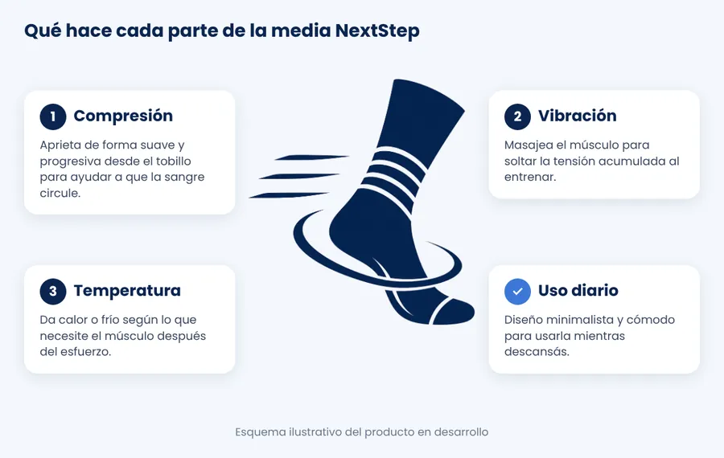
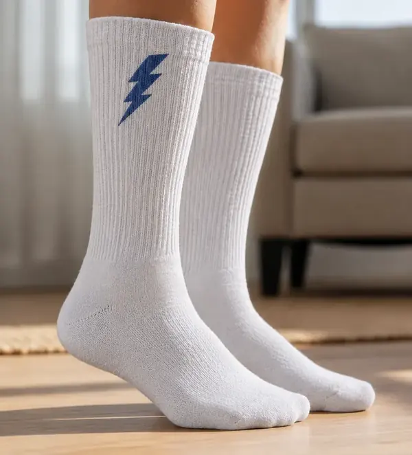

Inicio › Cómo funciona
Cómo funcionan las medias inteligentes NextStep
Tres tecnologías en una media deportiva para acelerar la recuperación muscular después de entrenar.

Paso a paso
- Entrenás o jugás como siempre.
- Te ponés las medias NextStep cuando terminás, mientras descansás.
- La compresión automática ayuda a que la sangre circule.
- La vibración masajea el músculo y suelta la tensión.
- El control de temperatura da calor o frío según lo que necesites.

Medias de compresión deportivas, pero inteligentes
Las medias de compresión deportivas comunes ayudan, pero hacen una sola cosa. Los aparatos de recuperación (botas de compresión, pistolas de masaje) son caros y no se usan todos los días. NextStep junta lo mejor de los dos en una prenda cómoda.